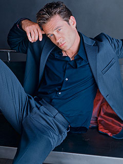

|

Publicado originalmente
em 2001

Conhea Connor Trinneer!
Saiba um pouco
mais sobre a vida e a carreira do ator
que interpreta o engenheiro Charles 'Trip' Tucker

|
 O
ator escolhido para interpretar Tucker mais conhecido por seu
papel como Zeus Zelenko na srie "One Life to Live".
Entretanto, ele tambm fez papis convidados em sries como
"Touched by an Angel", "Sliders", "FreakyLinks"
e "Gideon's Crossing". Em 2000 ele apareceu na
adaptao para TV da pea "Far East". Antes de fazer
carreira na televiso, Trinneer teve uma longa presena no
teatro. |